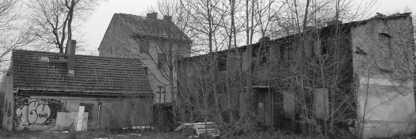

Geschichte und Denkmal
Ab 1782 ließ Friedrich II im Bereich der heutigen Koloniestraße in Berlin Wedding kleine Häuser auf die grüne Wiese bauen,
in denen Menschen aus Süddeutschland, Böhmen und der Schweiz angesiedelt wurden. Diese sollten zur Ernährung Berlins
beitragen. Im Laufe der Jahre wurde umgebaut, ein Mietshaus und drei Werks- oder Fabrikgebäude hinzugefügt, wovon zwei
leider zerfallen und abgerissen sind.

Die Geschichte der Koloniestraße 57 in Stichpunkten
Diese Daten haben wir aus unterschiedlichen Quellen zusammengetragen. Wenn ihr über weitere historische Informationen
oder Bilder von der Koloniestraße 57 verfügt, würden wir uns freuen, wenn ihr uns diese zur Verfügung stellen könnt.
- 1782 Errichtung der "Colonie am Louisenbad" durch Friedrich II um Soldiener Straße und Koloniestraße
- 1783 Bau des Kolonistenhauses in der Koloniestraße 57
- 1800 die Koloniestraße bekommit ihren Namen
- 1841 Kolonistenwohnhaus wird um eine weitere Achse verlängert, zunächst als Stall
- 1868 Grundstück von Leimsiederei übernommen
- 1870 Leimsiederei baut "Gartenhaus" als Werksgebäude
- 1874-75 Bau des Mietshauses durch Fabrikbesitzer
- 1885-1942 Leimfabrik, Gerberei, Lederfärberei
- ? Bau von zwei weiteren Fabrikgebäuden
- 1915-? Siegellack- und Tintenfabrik, Forellenräucherei?
- 1925-1935 Eisenkonstruktion, Werkstatt, Bauschlosserei
- 10.02.1982 Gebäude und Grundstück gehen in den Besitz des Vaterländischen Bauvereins über
- 1998 zwei Fabrikgebäude werden abgerissen
- 06.12.2010 Gebäude und Grundstück gehen in den Besitz der PinkePanke GmbH über
Links und Quellen